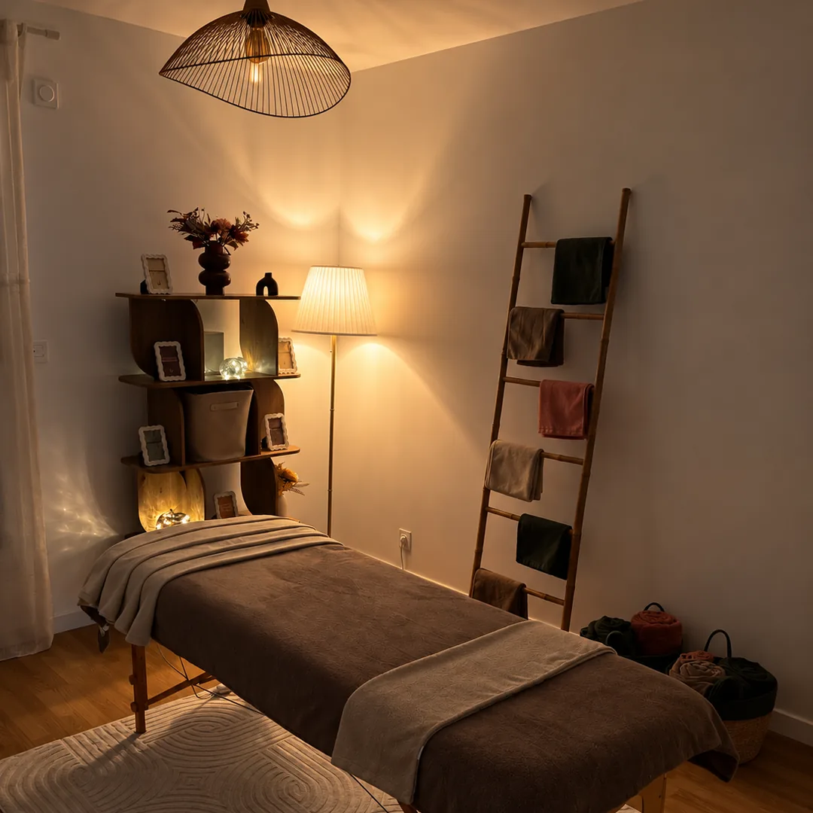

marieemassage
Une heure pour vous, dans une pièce pensée pour ça.
Réservé aux femmes Dès 60 € Montigny-le-Bretonneux
Une heure pour vous, dans une pièce pensée pour ça.
Réservé aux femmes Dès 60 € Montigny-le-Bretonneux
À propos
En parallèle de mon activité principale dans le paramédical, j'ai choisi de consacrer une partie de mon temps à quelque chose que j'aime particulièrement : masser.
L'idée est simple : vous accueillir, vous masser, et vous permettre de décrocher un moment.
Massages réservés aux femmes Par une femme, pour les femmes.
La Maison du Lotus est un centre de formation aux massages bien-être agréé FFMBE, à Voisins-le-Bretonneux.
Je ne soigne pas : je détends. Mes massages sont des soins de bien-être, ils ne remplacent ni un kinésithérapeute ni un avis médical.
Le lieu
J'ai créé une pièce entièrement dédiée aux massages, pensée pour vous accueillir dans une atmosphère agréable et chaleureuse.

Un petit espace où, pendant une heure, le monde peut bien attendre un peu.
Les massages
Parce qu'on n'a pas tous les mêmes envies ni les mêmes besoins, chacun a sa façon de prendre soin de vous.
Le i de chaque soin ouvre sa description.
| Soin | La séance | En forfait |
|---|---|---|
| KobidoLifting japonais du visage | 1 h60 € | Pas de forfait |
| Un modelage du visage venu du Japon, tout en pressions et en lissages. Le grain de peau s'affine, les traits se détendent. | ||
| RelaxantMassage corps complet | 1 h60 €1 h 3090 € | 3 séances de 1 h150 €3 séances de 1 h 30240 € |
| Des manœuvres lentes et enveloppantes, du dos aux jambes. Celui qu'on choisit quand on a surtout besoin de déposer les armes. | ||
| MadéroSoin corps remodelant | 1 h70 € | 5 séances300 € |
| Des outils en bois qui roulent et pétrissent. Un soin tonique, qui relance la circulation. | ||
| Drainage lymphatiqueJambes légères, circulation relancée | 1 h80 € | 5 séances350 € |
| Des pressions douces et rythmées qui relancent la lymphe. Les jambes se dégonflent, la lourdeur s'en va. | ||
Un forfait s'applique au soin choisi ; le tarif indiqué couvre l'ensemble des séances.
Retours clientes
Marie vient d’ouvrir sa pièce de massage : les premiers retours arriveront ici, tels qu’ils seront écrits.
En attendant, le mieux reste d’essayer — et de lui dire ce que vous en avez pensé.
Rendez-vous
En ligne à toute heure, ou de vive voix si vous préférez qu'on choisisse le soin ensemble.
Le planning à jour, et le créneau retenu dans la foulée.
Voir les disponibilitésEn m'appelant du lundi au samedi, de 9 h à 20 h. Par SMS aussi, si vous préférez : je réponds dès que je suis disponible.
06 31 18 34 81